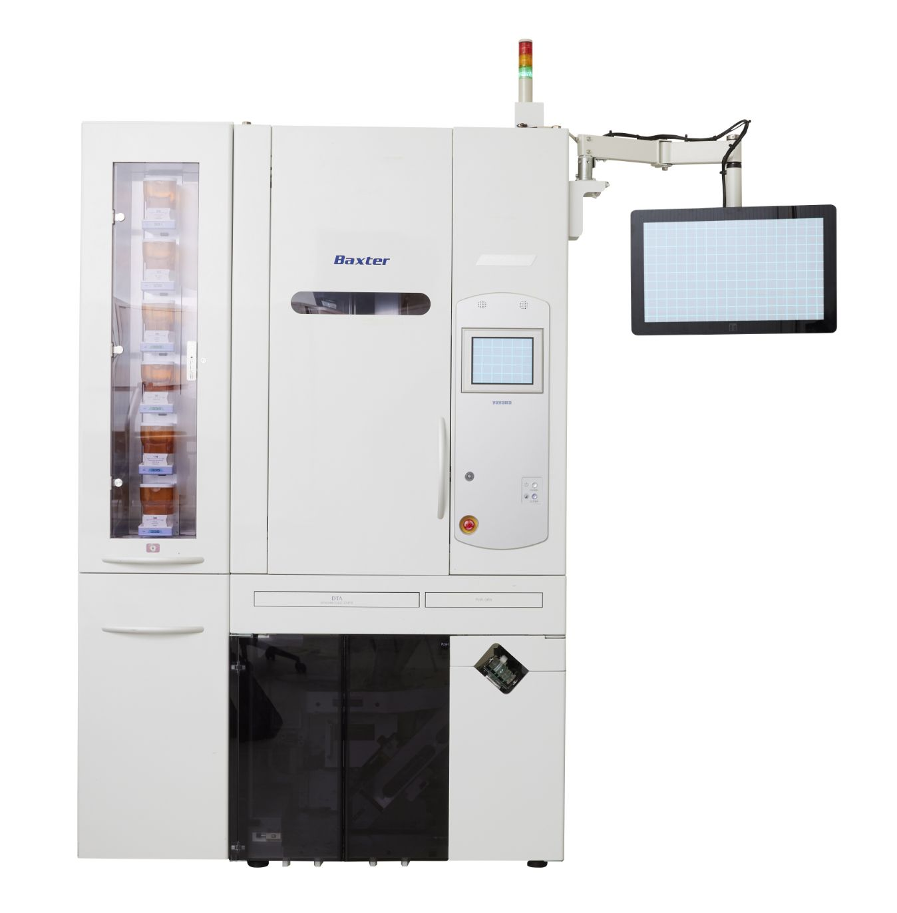

Baxter is a renowned multinational healthcare company known for its contributions in the field of medical products, including innovative treatments, pharmaceuticals, and advanced medical technologies. With a focus on improving patient care and enhancing medical outcomes, Baxter has established itself as a key player in the global healthcare industry.
Product
Baxter specializes in a diverse range of medical products and therapies, including intravenous (IV) solutions, infusion systems, renal and hospital products, nutritional therapies, and pharmaceuticals. Their product line caters to various medical needs, such as critical care, infectious diseases, hemophilia, and immune disorders, contributing to the advancement of healthcare practices worldwide.
Assignment
Situation
Baxter maintains a moderate-sized software development team comprising four software engineers, two testers, and a seasoned software architect. A majority of the team members have dedicated two decades to refining their skills and expanding their expertise within the existing software architecture. Leveraging their profound understanding of the software systems, some engineers also serve as support agents, assisting customers grappling with software-related issues.
Recognizing the need for streamlined development processes and the integration of new functionalities within the current FDS-II codebase, the Baxter team opted to enlist the support of an external consultant. The consultant's role entails enhancing the development workflow and facilitating the seamless implementation of novel features.
Task
Upon joining the FDS-II team, my primary focus centered around spearheading the development of new features and undertaking routine bug-fixing tasks. My relatively youthful profile as a software engineer was perceived as an asset, given my profound understanding of contemporary software engineering methodologies and practices. This attribute was particularly sought after by the FDS-II team, as they aimed to overhaul and optimize their existing development workflow.
Notably, my expertise in C#, in addition to the team's predominant proficiency in Visual Basic, proved to be a significant advantage. Given that segments of the FDS-II architecture were originally formulated in C#, my comprehensive knowledge in this area was seen as instrumental in navigating and enhancing the overall system efficiency.

Action
What initially commenced as routine development support swiftly evolved into the conceptualization and execution of new projects within the FDS-II infrastructure at Baxter. Many of the applications in the Baxter infrastructure are several decades old at this point, resulting in aged architectural decisions that pose significant challenges for current maintenance efforts.
After a few months with the team, a client's new feature request provided an opportunity to revamp a segment of the foundational architecture within the FDS-II infrastructure. Given the adoption of modern techniques for this fresh implementation, the responsibility fell upon me to devise, execute, and deploy this pivotal addition. Currently progressing as planned, this project is poised for imminent release and is envisioned to serve as a cornerstone for the gradual migration of legacy components to this newly engineered application.
Upon completion, a once intricate and unwieldy software architecture, comprising 20 interwoven applications, will be streamlined to encompass only two core components, which will serve all client applications used by customers. This transformative endeavor is set to significantly simplify the operational landscape and dramatically reduce the amount of bugs reported by customers.
Result
Contributing to Baxter as a consultant, I played a pivotal role in the development of the latest FDS-II infrastructure addition, slated for a 2023 release. Initially intended for a singular client, its simplified design and heightened efficiency quickly captured the attention of other key stakeholders, generating widespread interest in its integration.
Through meticulous beta testing at our primary client's site, we anticipate a seamless integration into the core systems of all existing Baxter clients. Post-integration, my focus shifted towards orchestrating the systematic assimilation of legacy software applications into this central framework. This strategic initiative not only streamlined the FDS-II codebase but also paved the way for a more efficient and user-friendly experience across the board.
Tools and Methods
Programming Languages
The predominant portion of the FDS-II codebase is composed in Visual Basic, supplemented by select segments written in C#. Across most applications, the UI framework relies on WPF, often integrating the MVVM design pattern to ensure efficient and streamlined user interaction. While the legacy systems continue to depend on manual SQL queries for database manipulation within the MariaDB framework, my newly designed software application incorporates Entity Framework to streamline this process.
For the new addition to the FDS-II infrastructure, I employed C# in conjunction with the .NET API framework, while leveraging SignalR for seamless communication with connected clients.
Development Methods
The FDS-II team adheres to an agile methodology, leveraging SCRUM as the primary framework. This comprehensive approach includes regular stand-ups, refinements, sprint plannings, and retrospectives, ensuring a collaborative and iterative development process.